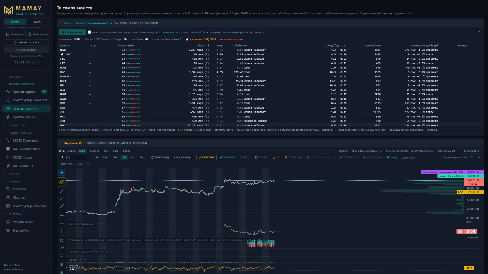
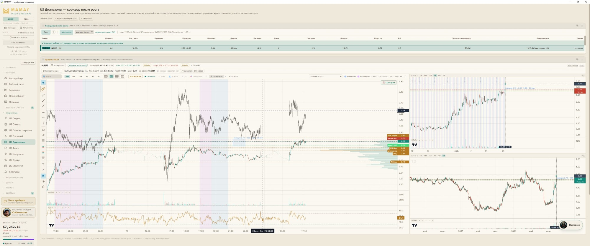
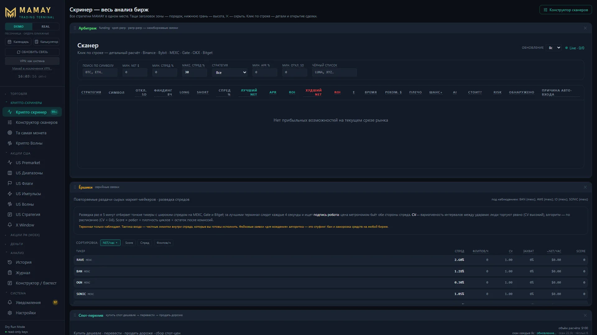
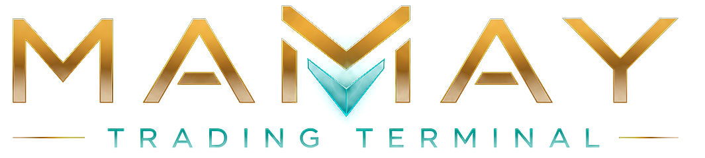

Инвестиционное предложение · октябрь 2026
MAMAY соединяет в одном окне торговлю на трёх рынках, скринеры, арбитраж шести бирж, проп-счета, обучение с ИИ-наставником, своего ИИ-агента трейдера — и сообщество с голосом и общим графиком. Продукт уже работает. Ищем одного-двух партнёров, чтобы вывести его на рынок быстрее.
Зачем это рынку
Графики — в одной, стакан — в другой, скринеры — в третьей, общение — в Telegram и Discord, сделки по проп-счетам — в таблицах, обучение — на курсах, свои идеи — в заметках. За каждую — отдельная подписка, между ними — ручное копирование и потерянное время.
MAMAY собирает это в одно окно и связывает: сигнал скринера открывает график, сценарий переносится в торговую панель, сделка попадает в журнал и в разбор наставника, а обсудить её можно тут же — с сообществом.
Отдельная возможность: Discord в России заблокирован с 8 октября 2024 года, сообщества трейдеров живут в Telegram-чатах без голоса и общего экрана. Им нужен новый дом.[1]
Продукт — уже работает
Это не макет: всё ниже — снимки и записи экрана настоящей программы (учебный режим DEMO).



Конкуренты
По открытым источникам на 26.10.2026. ✓ — есть, ◐ — частично, — — нет или не нашли.
| MAMAY | TradingView | ATAS | TigerTrade | CScalp | Discord / Telegram | |
|---|---|---|---|---|---|---|
| Графики и скринеры | ✓ | ✓ | ✓ | ✓ | ◐ | — |
| Стакан и торговля из него | ✓ | ◐ | ✓ | ✓ | ✓ | — |
| Крипта + акции США + акции РФ | ✓ | ✓ | ✓ | ✓ | ◐ | — |
| Межбиржевой арбитраж с чистой прибылью | ✓ | — | — | — | — | — |
| Проп-кабинет: правила, лимиты, сверка с фирмой | ✓ | — | — | — | — | — |
| Обучение и ИИ-наставник по своим сделкам | ✓ | — | ◐ | — | — | — |
| Свой ИИ-агент трейдера настраивает скринеры | скоро | — | — | — | — | — |
| Голос, показ экрана, общий график — внутри терминала | в плане | ◐ лента мнений | — | — | — | ◐ вне терминала |
| Работает в России без VPN | ✓ | ✓ | ✓ | ✓ | ✓ | Discord — нет |
| Аудитория | старт продаж — ноябрь 2026 | 30–60 млн в месяц (оценки)[4] | 360 000+ трейдеров[5] | ≈ 10 000 пользователей[6] | — | Discord в РФ: 29–40 млн до блокировки (оценка)[1] |
| Цена | 0 / $49 / $99 в месяц | подписка | от €24,95 в месяц[7] | подписка | бесплатно / подписка | бесплатно |
Вывод: у сильных конкурентов есть отдельные части. Целого — торговля, анализ, проп, обучение, ИИ и сообщество в одном окне — нет ни у кого. Это и есть защита MAMAY: повторить целое долго и дорого.
Новый блок · реализуем обязательно
Текст, голос, показ экрана и главное — общий график: ведущий рисует у себя, а у каждого участника разметка появляется на его собственном графике MAMAY. Попробуйте — всё ниже нажимается.
Передаётся не видео, а разметка и курсор — в сотни раз меньше трафика, без задержки и размытия. Ключи, баланс и сделки ведущего не уходят никуда.
Комнаты по темам, личные сообщения, голосовые комнаты, показ экрана, эфиры, файлы, реакции, поиск, роли и модерация.
Общий график, карточки сценариев и сделок, которые открываются у получателя прямо в MAMAY, режим стримера, ИИ-наставник в комнате — конспект созвона и ответы новичкам.
У лидера своё пространство с платными закрытыми комнатами. Участникам нужна подписка MAMAY, лидер получает доход, MAMAY — процент. Один лидер — сотни новых клиентов.
Комнаты, личные сообщения, карточки сценариев, сделок и графиков. 2–3 недели.
Голосовые комнаты, показ экрана с режимом стримера. 2 недели.
Разметка ведущего у всех, пространства лидеров, платные комнаты, модерация, наставник в комнате. 4–6 недель.
Управление проектом
Отдельное приложение: все обращения пользователей, комментарии YouTube, Telegram и ВКонтакте, почта проекта — в одних входящих. ИИ раскладывает их по темам, владелец видит, что люди просят чаще всего, и решает, что делать в следующей версии.
Сервер Пульта написан и проверен; запуск на хостинге — на этой неделе.
Открыть Пульт на весь экран ↗Безопасность и закон
Учётная запись — ключ подписки с номером. Платёжный сервис знает плательщика, MAMAY — только номер ключа.
Ключи API, сделки, стратегии и связки остаются на его компьютере. На сервер MAMAY они не уходят.
Торговля идёт на собственных счетах трейдера у бирж и брокеров. Мы не принимаем депозиты и не управляем средствами.
Сервер общения выносим отдельно; если закон потребует — регистрируемся как организатор распространения информации. Блок будет в любом случае.
Рынок
частных инвесторов с брокерскими счетами на Мосбирже (январь 2026)[2]
из них торгуют сами, не только держат[2]
пользователей криптовалют в России — оценка ЦБ (2025); другие оценки — до 15–17 млн[3]
активных трейдеров проп-фирм в мире; выручка отрасли — от $0,85 до $4,5 млрд в год по разным оценкам[8]
Для сравнения: у ATAS — более 360 тысяч трейдеров, у TigerTrade — около 10 тысяч. Базовый сценарий MAMAY — три тысячи платящих за три года — это доля процента рынка, а СНГ и англоязычная версия его расширяют.
Бизнес-модель
0 · $49 · $99
Бесплатно — вход и привычка. Pro — весь анализ без задержек. «Разработчик» — свой ИИ-агент. Год — со скидкой 2 месяца. Первым покупателям — $29.
% с комнат
Новый тариф: лидер продаёт доступ в закрытые комнаты, MAMAY берёт процент, а каждый участник — подписчик MAMAY.
до 30–50 %
Биржи делятся частью комиссий привлечённых трейдеров — по данным обзоров партнёрских программ.[9]
курсы лидеров
Лидеры продают курсы внутри «Вселенной обучения», MAMAY — площадка и процент.
Экономика · калькулятор
Двигайте ползунки — всё пересчитывается. Это модель для разговора, а не обещание дохода.
Сумма предложения — бюджет года целиком: она покрывает и осторожный сценарий, где выход в плюс наступает позже. Налоги и зарплата основателя в модель не включены. Курс — в разделе «Бюджет». Расходы первого года берутся из бюджета ниже; дальше растут вместе с числом пользователей (серверы, поддержка, платёжные комиссии).
Бюджет первого года
Суммы можно поменять — итог и калькулятор пересчитаются. Курс:
План
Ранняя цена для беты, Telegram-канал и YouTube, сервер Пульта и приём оплаты.
Платные расчёты — на сервере, оплата выдаёт ключ сама, первые партнёрства с биржами и проп-фирмами.
Комнаты и карточки, затем голос и показ экрана. Первые лидеры сообществ.
Тариф «Разработчик», общий график, платные комнаты лидеров.
Лицензии на данные акций, второй брокер, английская версия, СНГ.
Веб и macOS, мобильное приложение, экосистема MAMAY: работа, учёба, общение, агент.
Честно о рисках
| Риск | Что делаем |
|---|---|
| Пока нет платящих пользователей | Продажи открываются в ноябре; бюджет на продвижение — главная статья; каждое обращение пользователя видно в Пульте. |
| Регулирование общения и данных | Не храним персональные данные; сервер общения — отдельно; при необходимости — регистрация в реестре. Юрист — до первых денег. |
| Сильные конкуренты | Не повторяем их по одной функции — выигрываем целым: одно окно, проп, обучение, ИИ, сообщество. |
| Зависимость от бирж и их правил | Шесть бирж и брокер; данные бирж — по открытым API; лицензии на данные акций — в бюджете. |
| Один основатель | Разработка с ИИ даёт темп команды (54 выпуска за месяц); в бюджете — помощник по поддержке и модерации. |
Предложение
Продукт построен и работает. Деньги нужны, чтобы его увидели: продвижение, серверы, данные, юридическая база и сообщество, ради которого к нам придут целыми группами.
Участие — доля в проекте. Размер доли и условия обсуждаем лично.
Потребность на первый год — по бюджету выше: —.

Роман Надыров — основатель и автор MAMAY. Трейдер: крипта, акции США и РФ, проп-трейдинг. Сам пользуется программой каждый день — поэтому в ней есть то, чего нет в других терминалах.